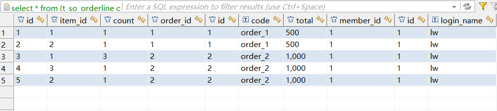

1. 使用dbeaver连接postgresql
在使用dbeaver下载postgresql（以下简称pg）的driver时，楼主遇到一个问题，就是那个驱动无法正常安装，于是楼主去pg的安装目录找了一下，发现了pg的jdbc驱动，就是下图那个东西。
 楼主把它配置到dbeaver的driver manager中就可以不用下载直接连接了。
step：dbeaver菜单栏“database”->driver manager->postgresql->edit->add file->找到相应的pg driver
对于这些pg连接信息，可以先使用pg自带的pgadmin查看。
拿一个简单的create table语句测试一下
这样，postgresql就安装好了！
楼主把它配置到dbeaver的driver manager中就可以不用下载直接连接了。
step：dbeaver菜单栏“database”->driver manager->postgresql->edit->add file->找到相应的pg driver
对于这些pg连接信息，可以先使用pg自带的pgadmin查看。
拿一个简单的create table语句测试一下
这样，postgresql就安装好了！
2. Tips
在使用dbeaver的时候，选中任意一张表右键->generate sql 可以查看一些基于该表的常用crud等操作的sql语句。
3. 基础
（1）数据类型
楼主在这里只介绍一些常用的吧，详情请移步https://www.postgresql.org/docs/9.6/static/
|类型|说明|占用空间|取值范围|
|:-:|:-:|:-:|:-:|
|smallint|小范围整型|2个字节|$-2^{15}$（$2^{15}-1$）即-3276832767|
|int(integer)|普通整型|4个字节|$-2^{31}$（$2^{31}-1$）大概正负21亿多|
|bigint|大整型|8个字节|$-2^{63}$（$2^{63}-1$）大概正负922亿亿|
|real|浮点数类型|4个字节|6位十进制精度|
|double precision|双精度浮点数类型|8个字节|15位十进制精度|
|numeric|任意精度类型|变长|任意|
|smallserial|自增小范围整型|2个字节|$2^{0}$（$2^{15}-1$）|
|serial|自增整型|4个字节|$2^{0}$（$2^{31}-1$）|
|bigserial|自增大范围整型|8个字节|$2^{0}$（$2^{63}-1$）|
|char(n)/character(n)|固定长度费二进制字符串，不足补空|n个字节|-|
|varchar(n)/character varying(n)|变长费二进制字符串，有长度限制|n个字节|-|
|text|变长非二进制字符串，无长度限制|任意|-|
|bytea|变长的二进制字符串|1或者4+世纪字符串长度|-|
|boolean|true/false|1个字节|true/false|
|timestamp [(p)] [without time zone]|日期时间|8个字节|4713BC294276AD|
|timestamp [(p)] with time zone|日期时间时区|8个字节|4713BC294276AD|
|time [(p)] [without time zone]|时间|8个字节|00:00:0024:00:00|
|time [(p)] with time zone|时间时区|12个字节|00:00:00+145924:00:00-1459|
|interval [fields] [(p)]|时间间隔|16个字节|-178000000 years178000000 years|
浮点数类型有几个特殊的值： Infinity：正无穷 -Infinity：负无穷 NaN：不是数字
timestamp 楼主发现，timestamp有好几种输入格式 如：
2
3
4
5
6
7
INSERT INTO public.test
(id, "name", flag, birthday)
VALUES(1, 'lw', false, '1994/10/5 00:00:00 +0800');
INSERT INTO public.test
(id, "name", flag, birthday)
VALUES(2, 'dqy', false, '1995-3-21 00:00:00 +0800');这两种timestamp的输入格式效果是一样的

timestamp输入格式详解请移步https://www.postgresql.org/docs/9.6/static/datatype-datetime.html 的 date input 栏
interval 这个用法楼主没有用过，仔细研究了一下它的用法，以demo的形式来表达吧 demo1：
2
3
4
INSERT INTO public.test
(id, "name", flag, birthday, sleepinterval)
VALUES(3, 'sw', false, '1994/10/5 00:00:00 +0800', '8 hours');
demo2：
2
3
4
5
6
7
8
9
10
INSERT INTO public.test
(id, "name", flag, birthday, lessoninterval)
VALUES(4, 'zsf', false, '1994/10/5 00:00:00 +0800', '40 mins');
INSERT INTO public.test
(id, "name", flag, lessoninterval)
VALUES(5, 'gyf', false, '1 hours 40 minutes');
INSERT INTO public.test
(id, "name", flag, lessoninterval)
VALUES(6, 'whz', false, '1 weeks 1 hours 40 minutes');更多interval输入格式请移步https://www.postgresql.org/docs/9.6/static/datatype-datetime.html 的interval input 栏
（2）create table
语法： create table table_name ( column_name1 data_type(size), column_name2 data_type(size), … ); demo：
1 | create table t_mem_member |
（3）drop table
语法： drop table table_name demo：
1 | drop table t_so_orderline; |
（4）insert
语法： insert into table_name(column1, column2, …, columnN) values(value1, value2, …, valueN); demo：
1 | INSERT INTO public.t_mem_member |
（5）select
语法： select column1, column2, …, columnN from table_name demo：
1 | SELECT |
（6）left outer join
语法： select … from table1 left outer join table2 on conditional_expression … demo：
1 | select |
为了说明left outer join的功能，来个图（这图画的贼蛋疼），这个图对应的是上面那个demo 
（7）group by
语法： select column-list from table_name where [conditions] group by column1, column2, …, clolumnN demo：
1 | select |
注意：楼主发现，select后面的列必须出现在group by后面，或者是被包含在聚合函数中，否则会出现如下报错
聚合函数：像avg()、sum()、max()等就是聚合函数
（7）alter
语法： 添加列 alter table table_name add column_name datatype; demo：
1 | alter table test add flag boolean; |
删除列 alter table table_name drop column column_name; demo：
1 | alter table test drop column birthday; |
更改列数据类型 alter table table_name alter column column_name type datatype; demo：
1 | alter table test alter column flag type varchar; |
添加/删除not null约束 alter table table_name alter column_name {set | drop} not null; demo：
1 | alter table test alter flag set not null; |
添加unique约束 alter table table_name add constraint my_unique_constraint unique(column1, column2); demo：
1 | ALTER TABLE cars ADD CONSTRAINT my_unique_constraint UNIQUE(id); |
添加primary key约束 alter table table_name add constraint my_primary_key primary key(column1, column2); demo：
1 | ALTER TABLE cars ADD CONSTRAINT my_primary_key PRIMARY KEY (id); |
添加 unique/primary key约束 （注：楼主发现有多种方法可以添加unique约束和primary key约束，这里先不深究） alter table table_name add {unique | primary key} using index index_name; demo：
1 | alter table student add primary key using index indexId; |
这里必需讲一下这种index的生成（即生成索引），举个栗子吧
2
3
4
create table student (id int);
--给他添加一个index或者unique index
create unique index indexId on student (id);create index详情请移步 https://www.postgresql.org/docs/9.6/static/sql-createindex.html
添加唯一约束 alter table table_name add constraint the_name_you_want unique(condition); demo：
1 | ALTER TABLE student ADD CONSTRAINT theNameYouDecide UNIQUE(id>0); |
添加check约束 alter table table_name add constraint the_name_you_want check(co) demo：
1 | ALTER TABLE student ADD CONSTRAINT theNameYouDecide CHECK (flag); |
删除约束 alter table table_name drop constraint the_name_of_your_constraint; demo：
1 | alter table student drop constraint theNameYouDecide; |
（8）delete
语法： delete from table_name [where condition] demo：
1 | delete from test where id=3 |
注意：不带where条件时，会把所有的记录删除
（9）update
语法： update table_name set column1=value1, column2=value2, …, columnN=valueN where [condition] demo：
1 | update test set sleepinterval=null where id=3 |
（10）drop
语法： drop table table_name; demo：
1 | drop table student; |
（11）update
语法： update table_name set column1=value1, column2=value2, …, columnN=valueN where [condition] dmeo：
1 | update test set flag=true where id=1; |
（12）like
语法： select from table_name where column like ‘xxx%’; select from table_name where column like ‘%xxx%’; select from table_name where column like ‘xxx’; select from table_name where column like ‘_xxx‘; dmeo：
1 | select * from test where name like '_w'; |
（13）limit
语法： select column1, column2, …, columnN from table_name limit [no. of row] [offset [row number]] demo：
1 | select * from test limit 2 offset 3; |
demo中sql是表示从第3条开始读（排最前面的是第0条）读取两条记录
（14）order by
语法： select column-list from table_name [where condition] [order by column1, column2, …, columnN] [asc | desc] demo：
1 | select * from test order by id; |
默认是升序，也就是asc。
（15）having
语法： select column1, column2, …, columnN from table1, table2, …, tableN [where conditions] group by column1, column2, …, columnN having [conditions] order by column1, column2, …, columnN demo：
1 | select |
楼主发现，having后面的condition字段必须出现在group by子句中，或者被包含在聚合函数中，而group by后面的condition字段又必须出现在select子句，或者被包含在聚合函数中，so…
（16）with
语法： with name_for_summary_data as ( select statement ); select column-list from name_for_summary_data; demo：
1 | with temp_table as |
感觉是用来使用结果集创建的临时表的。
（17）distinct
语法： select distinct column1, column2, …, columnN from table_name [where conditions] demo：
1 | select distinct flag from test; |
distinct是用来去重的。
（18）and/or
语法： select column-list from table_name where condition1 {and | or} condition2 demo：
1 | select * from test where name='lw' or name='dqy'; |
（19）union
语法： select column-list1 from table_list1 [where conditions] union [all] select column-list2 from table_list2 [where conditions] demo：
1 | select id from test |
注意：用union连接的两个select结果集必需事一样的数据类型。union是可以去重的，union all是不去重的。
（20）cross join
语法： select column-list from table_name1 cross join table_name2 demo：
1 | select * from test cross join cars; |
楼主觉得这种运算相当于是两个矩阵相乘或者说是两个集合的笛卡尔积。
（21）inner join
语法： select table-list from table1 inner join table2 on table1.filed=table2.filed demo：
1 | select * from test inner join cars on test.id=cars.id; |
这个是上面sql的结果


楼主觉得像联表查询。
（22）right outer join
语法： select column-list table1 right outer join table2 on conditional_expressions demo：
1 | create table student |
这个是demo的结果截图。
楼主认为就是，right out join 后面接的那张表的数据全保留，左边不满足on后面的conditions的就为空，left out join是左边的全保留，正好相反，可以结合上面的left outer join来看。
（23）full outer join
语法： select column-list table1 full outer join table2 on conditional_expresssions; demo：
1 | select * from student full outer join lesson on student.lesson_id=lesson.id; |
数据表还是使用right out join的表
可以发现，任何一张表的所有数据均会保留。
（24）create database;
语法： create database dbName; create database dbName owner rolename; demo：
1 | create database jpa; |
然后在 pgadmin中就可以看到了
（25）drop sequence
语法： drop sequence [if exists] sequence_name [, …] [cascade | restrict] demo：
1 | drop sequence person_id_seq; |
就先写这么多，楼主写着玩意写了两天，还不见底，postgresql真是博大精深啊。。